VAASAL VILLA
HOTEL + RESTAURANT MANAGEMENT SYSTEM
தமிழ்ப் பயிற்சி வீடியோ — காட்சிப் பலகை மற்றும் ஸ்கிரிப்ட்
TRAINING VIDEO STORYBOARD & SCRIPT
16 காட்சிகள்56 தமிழ் subtitles (.srt)43 slide frames 1920×1080சுமார் 7½ நிமிடம்FFmpeg வழிமுறைகள்
உள்ளடக்கம்
- 1நோக்கம்3
- 2வீடியோ விவரக்குறிப்பு4
- 3காட்சிப் பலகை (Storyboard)6
- 4முழு விவரிப்பு ஸ்கிரிப்ட்19
- 5பதிவு செய்யும் முறை22
- 5.1முறை A — நேரடித் திரைப் பதிவு (பரிந்துரை)22
- 5.2முறை B — படக்காட்சி (slideshow) + விவரிப்பு22
- 6FFmpeg கட்டளைகள்23
- 7வெளியிடும் முன் சரிபார்ப்பு24
1நோக்கம்Purpose, audience and what is delivered
புதிய பணியாளர்கள் (வரவேற்பு, காசாளர், பணியாளர், சமையலறை, வீட்டுப் பராமரிப்பு, மேலாளர்கள்) ஒரு விருந்தினரின் முழுப் பயணத்தையும் சுமார் ஏழரை நிமிடங்களில் பார்த்துப் புரிந்துகொள்ள இந்த வீடியோ உதவும். ஒவ்வொரு காட்சியும் தமிழ்ப் பயன்பாட்டு வழிகாட்டியின் ஒரு அத்தியாயத்துடன் பொருந்துகிறது.
முக்கியம் — வீடியோ கோப்பு உருவாக்கப்படவில்லை
இந்தச் சோதனைச் சூழலில் ffmpeg அல்லது திரைப் பதிவுக் கருவி இல்லை. அதனால் MP4 கோப்பு உருவாக்கப்படவில்லை; போலியான வீடியோ கோப்பும் தரப்படவில்லை. உருவாக்கத் தேவையான அனைத்தும் தயாராக உள்ளன: காட்சிப் பலகை, முழு விவரிப்பு, நேரமிட்ட VAASAL_VILLA_TRAINING.srt, 43 slide frames (video_frames/), FFmpeg பட்டியல் (video_frames/slides.txt) மற்றும் கீழே உள்ள கட்டளைகள்.
| கோப்பு | உள்ளடக்கம் |
|---|
VAASAL_VILLA_TRAINING.srt | 56 தமிழ் subtitles, UTF-8, காட்சி நேரங்களுடன் பொருந்தியவை |
video_frames/NN_*.png | 43 படங்கள், 1920×1080 — உண்மையான திரைப்படங்களின் மேல் 16:9 பகுதி |
video_frames/slides.txt | FFmpeg concat பட்டியல்: ஒவ்வொரு படமும் எத்தனை விநாடிகள் என்பதுடன் |
screenshots/ | 82 முழு அளவுத் திரைப்படங்கள் (நேரடிப் பதிவுக்கு வழிகாட்டியாக) |
2வீடியோ விவரக்குறிப்புVideo specification
| அம்சம் | மதிப்பு |
|---|
| தெளிவுத்திறன் / வேகம் | 1920×1080 (Full HD), 30 fps, H.264 + AAC, MP4 |
| நீளம் | சுமார் 7 நிமிடம் 34 விநாடி (16 காட்சிகள்; தலைப்பு மற்றும் நிறைவு அட்டை உட்பட) |
| விவரிப்பு | தமிழ், அமைதியான தெளிவான குரல்; ஒவ்வொரு subtitle வரிக்கும் ஒரு வாக்கியம் |
| Subtitles | தமிழ் (.srt); எழுத்துரு Nirmala UI அல்லது Latha, அளவு 22–26, கீழ் மையம், அரை-ஒளிபுகும் கருப்புப் பின்னணி |
| திரைகள் | உண்மையான கணினி — டெமோ தரவு மட்டும் (Nuwan Perera, Oliver Jensen கற்பனைப் பெயர்கள்) |
| தனியுரிமை | கடவுச்சொல், API key எதுவும் திரையில் வரக்கூடாது; டெமோ கடவுச்சொல் README-இல் மட்டும் |
| இசை | விருப்பம்: உரிமம் இல்லாத மென்மையான பின்னணி இசை, விவரிப்பைவிட −20 dB |
காட்சிச் சுருக்கம்
| # | காட்சி | Scene | தொடக்கம் | நீளம் |
|---|
| 1 | அறிமுகம் | Welcome | 0:02 | 0:25 |
| 2 | உள்நுழைவு | Signing in | 0:27 | 0:33 |
| 3 | டாஷ்போர்டு மற்றும் முன் மேசை | Dashboard & front desk | 1:00 | 0:26 |
| 4 | Walk-in முன்பதிவு — உதாரணம் A | Walk-in booking (Example A) | 1:27 | 0:44 |
| 5 | வருகைப் பதிவு மற்றும் சாவி அட்டை | Check-in & key card | 2:11 | 0:32 |
| 6 | அறை சேவை — உதாரணம் C | Room service (Example C) | 2:42 | 0:35 |
| 7 | Folio மற்றும் கூடுதல் கட்டணம் | Folio & laundry charge | 3:18 | 0:24 |
| 8 | வெளியேறுதல் — உதாரணம் D | Checkout (Example D) | 3:41 | 0:41 |
| 9 | வீட்டுப் பராமரிப்பு — உதாரணம் E | Housekeeping (Example E) | 4:23 | 0:34 |
| 10 | உணவகம்: மேசை T6 — உதாரணம் B | Restaurant table T6 (Example B) | 4:56 | 0:37 |
| 11 | காசாளர் ஷிப்ட் மற்றும் நாள் முடிவு | Cashier shift & day-end | 5:34 | 0:25 |
| 12 | சாவி அட்டைகள் (சிமுலேஷன்) | Key cards (simulation) | 5:59 | 0:20 |
| 13 | இரவுத் தணிக்கை | Night audit | 6:19 | 0:26 |
| 14 | அறிக்கைகள் மற்றும் உணவக மேலாளர் | Reports & restaurant back office | 6:44 | 0:16 |
| 15 | பிழைகள் மற்றும் தீர்வுகள் | Errors & troubleshooting | 7:00 | 0:18 |
| 16 | நிறைவு | Closing | 7:18 | 0:12 |
| மொத்தம் | Total incl. title and end cards | | 7:34 |
3காட்சிப் பலகை (Storyboard)Scene by scene — screen, action and narration with timing
நேரங்கள் SRT கோப்புடன் சரியாகப் பொருந்துகின்றன. "திரை" நெடுவரிசை எந்தத் திரைப்படம் காட்டப்பட வேண்டும் என்பதைக் குறிக்கிறது (slideshow முறையில் அதே கோப்பின் frame பயன்படும்).
1அறிமுகம் Welcome0:02 – 0:27
| நேரம் | திரை | செயல் / Action | விவரிப்பு (Narration) |
|---|
| 0:02–0:10 | 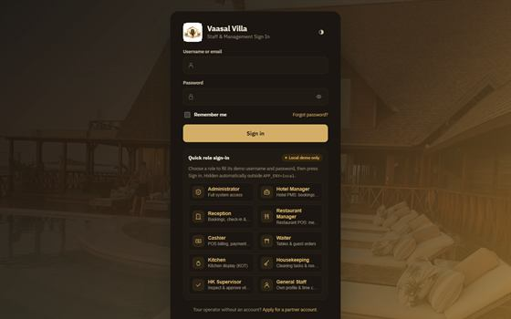 14_login_page.png | Logo + title card, then the sign-in page | வணக்கம்! Vaasal Villa ஹோட்டல் மற்றும் உணவக மேலாண்மை அமைப்பின் பயிற்சிக்கு வரவேற்கிறோம். |
| 0:10–0:18 | 14_login_page.png | Highlight "Hotel PMS" and "Restaurant POS" labels | இந்த அமைப்பில் இரண்டு பகுதிகள் உள்ளன: வில்லாக்களுக்கான ஹோட்டல் PMS, உணவகத்துக்கான POS. |
| 0:18–0:26 | 14_login_page.png | Show the five examples A–E as a list | இன்று ஒரு விருந்தினரின் முழுப் பயணத்தையும் — முன்பதிவு முதல் வெளியேறுதல் வரை — பார்ப்போம். |
2உள்நுழைவு Signing in0:27 – 1:00
| நேரம் | திரை | செயல் / Action | விவரிப்பு (Narration) |
|---|
| 0:27–0:33 | 14_login_page.png | Pointer on Username, Password, Sign in | உங்கள் பயனர் பெயரையும் கடவுச்சொல்லையும் உள்ளிட்டு Sign in அழுத்துங்கள். |
| 0:34–0:42 | 14_login_page.png | Circle the "Local demo only" badge | கீழே உள்ள டெமோ அட்டைகள் சோதனைக் கணினியில் மட்டுமே தெரியும்; உண்மையான கணினியில் மறைந்துவிடும். |
| 0:42–0:51 | 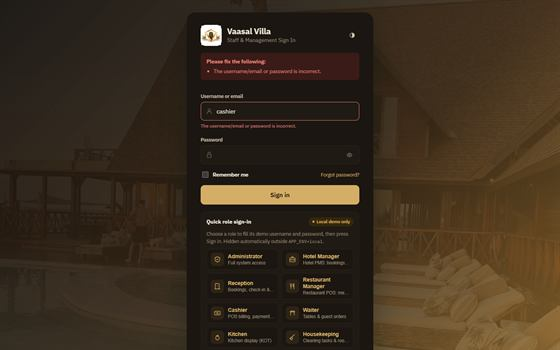 77_invalid_login.png | Zoom on the red error box | கடவுச்சொல் தவறானால் பொதுவான செய்தி வரும். ஐந்து தவறுகளுக்குப் பின் கணக்கு 15 நிமிடம் பூட்டப்படும். |
| 0:51–0:59 | 77_invalid_login.png | Text overlay: "கடவுச்சொல் இரகசியம்" | உங்கள் கடவுச்சொல்லை யாருடனும் பகிர வேண்டாம்; மேசையை விட்டுச் செல்லும்போது Log out செய்யுங்கள். |
3டாஷ்போர்டு மற்றும் முன் மேசை Dashboard & front desk1:00 – 1:27
| நேரம் | திரை | செயல் / Action | விவரிப்பு (Narration) |
|---|
| 1:00–1:08 | 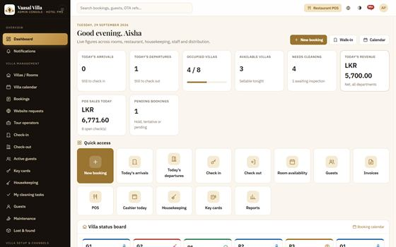 01_admin_dashboard.png | Pan across the KPI cards | டாஷ்போர்டில் இன்றைய வருகைகள், வெளியேற்றங்கள், நிரம்பல், வருமானம் ஒரே பார்வையில் தெரியும். |
| 1:08–1:17 | 01_admin_dashboard.png | Pan to the Villa status board | கீழே வில்லா நிலைப் பலகை — ஒவ்வொரு வில்லாவும் காலியா, நிரம்பியதா, சுத்தம் தேவையா என்று காட்டும். |
| 1:17–1:26 | 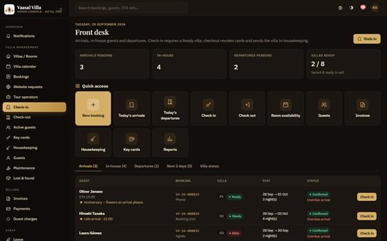 15_front_desk.png | Pointer on Walk-in and Run night audit | வரவேற்பாளரின் முதன்மைப் பக்கம் Front desk. இங்கே Walk-in மற்றும் Run night audit பொத்தான்கள் உள்ளன. |
4Walk-in முன்பதிவு — உதாரணம் A Walk-in booking (Example A)1:27 – 2:11
| நேரம் | திரை | செயல் / Action | விவரிப்பு (Narration) |
|---|
| 1:27–1:34 | 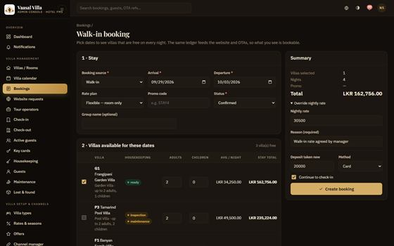 02_walkin_booking.png | Show dates 29/09/2026 → 03/10/2026 | Nuwan Perera முன்பதிவின்றி வருகிறார்: 29 செப்டம்பர் முதல் 3 அக்டோபர் வரை, இருவர். |
| 1:34–1:42 | 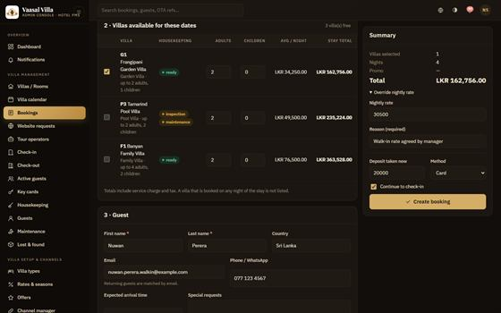 03_room_selection.png | Tick G1; Adults 2, Children 0 | அனைத்து இரவுகளிலும் காலியான வில்லாக்கள் மட்டுமே பட்டியலில் வரும். G1-ஐத் தேர்வு செய்கிறோம். |
| 1:43–1:49 | 02_walkin_booking.png | Type the guest details | விருந்தினரின் பெயர், நாடு, மின்னஞ்சல், தொலைபேசி ஆகியவற்றை நிரப்புங்கள். |
| 1:49–1:56 | 02_walkin_booking.png | Open "Override nightly rate", type 30500 and the reason | மேலாளர் ஒப்புக்கொண்ட இரவு விலை 30,500 — காரணத்துடன் override செய்யப்படுகிறது. |
| 1:57–2:02 | 02_walkin_booking.png | Deposit 20000 · Card · Create booking | முற்பணம் இருபதாயிரம் ரூபாய், அட்டை மூலம். பின்னர் Create booking. |
| 2:03–2:09 | 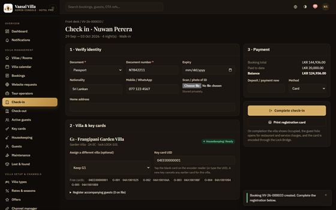 04_checkin.png | Overlay the calculation table | முன்பதிவு மொத்தம் 144,936 ரூபாய்: அறை 122,000, சேவைக் கட்டணம் 10%, வரி 8%. |
5வருகைப் பதிவு மற்றும் சாவி அட்டை Check-in & key card2:11 – 2:42
| நேரம் | திரை | செயல் / Action | விவரிப்பு (Narration) |
|---|
| 2:11–2:18 | 04_checkin.png | Pointer on Document and Document number | Check-in பக்கத்தில் அடையாள ஆவண வகையும் எண்ணும் கட்டாயம். ஆவணப் படத்தையும் இணைக்கலாம். |
| 2:18–2:27 | 04_checkin.png | Click the first free card chip | வில்லா Ready நிலையில் இருக்க வேண்டும். Free cards பட்டியலில் ஒரு அட்டையைத் தேர்வு செய்யுங்கள். |
| 2:27–2:33 | 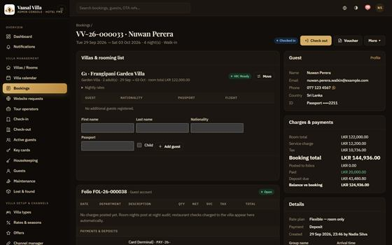 26_checked_in.png | Show "Checked in" badge and the active card | Complete check-in அழுத்தியதும் வில்லா Occupied ஆகும், அட்டை Active ஆகும். |
| 2:34–2:41 | 26_checked_in.png | Purple overlay: "SIMULATION" | கவனிக்க: இந்தக் கணினியில் கதவுப் பூட்டுகள் சிமுலேட்டர் மூலம் மட்டுமே இயங்குகின்றன. |
6அறை சேவை — உதாரணம் C Room service (Example C)2:42 – 3:18
| நேரம் | திரை | செயல் / Action | விவரிப்பு (Narration) |
|---|
| 2:42–2:52 | 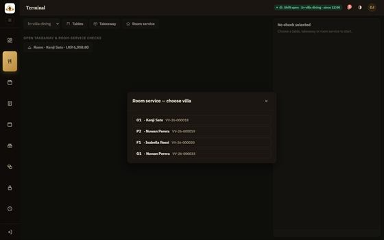 27_room_service_select.png | Open Room service; choose G1 | விருந்தினர் வில்லாவிலிருந்து உணவு கேட்கிறார். POS-இல் Room service அழுத்தி G1 · Nuwan Perera தேர்வு செய்யுங்கள். |
| 2:52–3:00 | 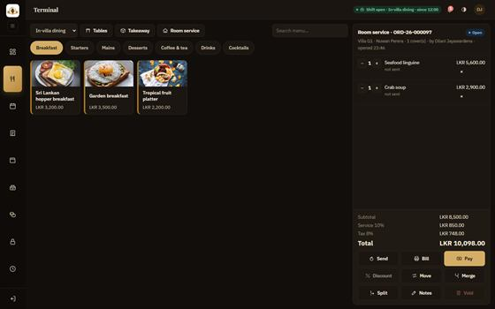 28_room_service_check.png | Add the two dishes; press Send | Seafood linguine, Crab soup — மொத்தம் 8,500 ரூபாய். Send அழுத்தினால் சமையலறைக்குச் செல்லும். |
| 3:01–3:08 | 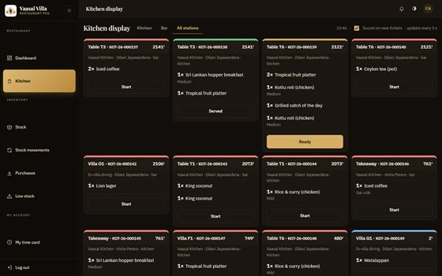 07_kitchen_kot.png | Highlight the Villa G1 ticket and its button | சமையலறைத் திரையில் புதிய ticket வருகிறது. Start, Ready, Served என வரிசையாக அழுத்துங்கள். |
| 3:09–3:16 | 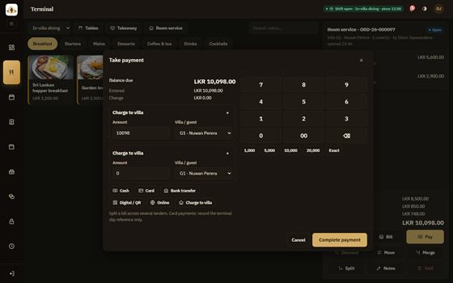 08_room_service.png | Choose "Charge to villa"; Complete payment | பின்னர் Pay, Charge to villa. சேவைக் கட்டணம், வரியுடன் 10,098 ரூபாய் G1 கணக்கில் சேரும். |
7Folio மற்றும் கூடுதல் கட்டணம் Folio & laundry charge3:18 – 3:41
| நேரம் | திரை | செயல் / Action | விவரிப்பு (Narration) |
|---|
| 3:18–3:25 | 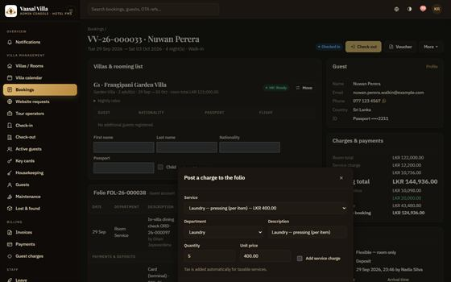 29_laundry_charge.png | Select the laundry item; Quantity 5 | சலவைக் கட்டணம் சேர்க்க Folio-வில் Post charge. Pressing, ஐந்து உடைகள் — இரண்டாயிரம் ரூபாய். |
| 3:26–3:33 | 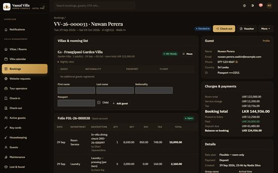 09_guest_folio.png | Scroll the folio lines | வரி 160 சேர்த்து 2,160. Folio-வில் அறை சேவை, சலவை, முற்பணம் எல்லாம் தெரியும். |
| 3:33–3:40 | 09_guest_folio.png | Text overlay: "Reverse, don't delete" | பதிவான கட்டணத்தை அழிக்க முடியாது; அனுமதியுள்ளவர் மட்டும் எதிர்ப் பதிவு செய்யலாம். |
8வெளியேறுதல் — உதாரணம் D Checkout (Example D)3:41 – 4:23
| நேரம் | திரை | செயல் / Action | விவரிப்பு (Narration) |
|---|
| 3:41–3:51 | 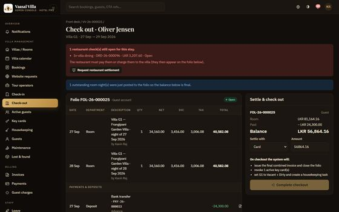 16_checkout_blocked.png | Red box; disabled button | Oliver Jensen வெளியேறுகிறார். ஆனால் ஒரு உணவகக் கணக்கு இன்னும் திறந்துள்ளது — Complete checkout முடக்கப்பட்டுள்ளது. |
| 3:51–3:58 | 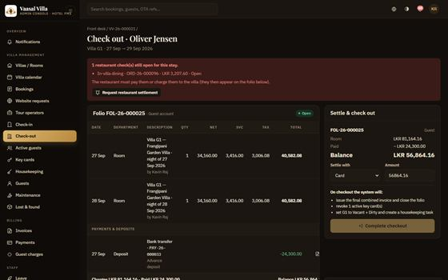 17_settlement_requested.png | Click Request restaurant settlement | Request restaurant settlement அழுத்துங்கள். காசாளருக்கு அறிவிப்பு செல்லும். |
| 3:59–4:05 | 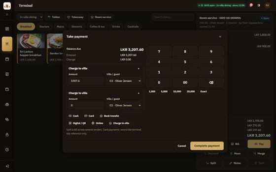 19_pos_charge_to_villa.png | Cashier screen: Charge to villa | காசாளர் அந்த check-ஐ Charge to villa மூலம் வில்லாக் கணக்கில் சேர்க்கிறார். |
| 4:06–4:12 | 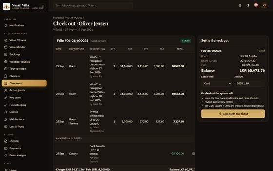 10_checkout.png | Settle with Card; Complete checkout | இப்போது நிலுவையை அட்டையால் செலுத்தி Complete checkout அழுத்துங்கள். |
| 4:12–4:21 | 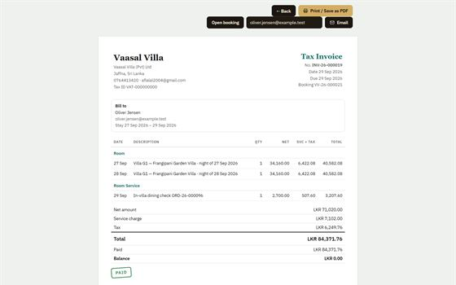 21_final_invoice.png | Show PAID stamp | இறுதி விலைப்பட்டியல்: 84,371.76 ரூபாய், முழுமையாகச் செலுத்தப்பட்டது. வில்லா Dirty ஆகி சுத்தப் பணி உருவாகிறது. |
9வீட்டுப் பராமரிப்பு — உதாரணம் E Housekeeping (Example E)4:23 – 4:56
| நேரம் | திரை | செயல் / Action | விவரிப்பு (Narration) |
|---|
| 4:23–4:29 | 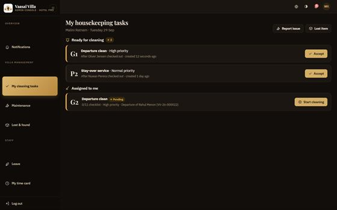 22_my_cleaning_tasks.png | Accept → Start | அறைப் பணியாளர் My cleaning tasks-இல் G1-ஐ Accept செய்து Start அழுத்துகிறார். |
| 4:30–4:38 | 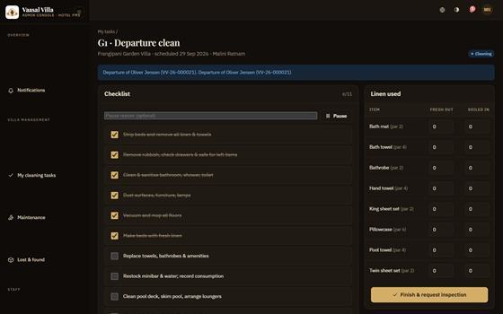 23_cleaning_checklist.png | Tick checklist items | சரிபார்ப்புப் பட்டியலில் ஒவ்வொரு வேலையையும் டிக் செய்யுங்கள். எல்லாம் முடியாமல் சமர்ப்பிக்க முடியாது. |
| 4:39–4:44 | 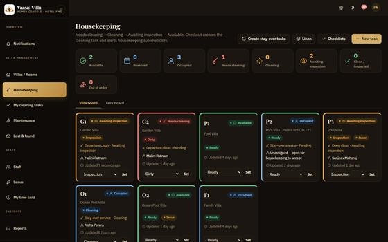 11_housekeeping.png | Highlight G1 "Awaiting inspection" | மேற்பார்வையாளரின் board-இல் G1 ஆய்வுக்காகக் காத்திருக்கிறது. |
| 4:45–4:50 | 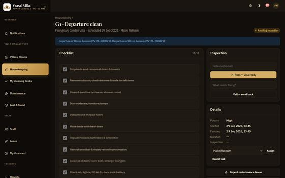 24_inspection.png | Pointer on Approve and Reject | சரியாக இருந்தால் Approve; குறை இருந்தால் காரணத்துடன் Reject. |
| 4:51–4:55 | 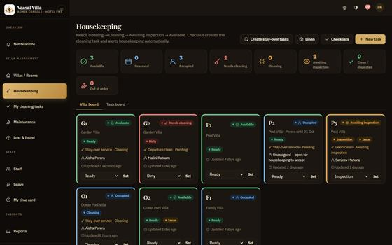 25_villa_ready.png | Green "Ready" status | G1 இப்போது Ready — அடுத்த விருந்தினருக்குத் தயார். |
10உணவகம்: மேசை T6 — உதாரணம் B Restaurant table T6 (Example B)4:56 – 5:34
| நேரம் | திரை | செயல் / Action | விவரிப்பு (Narration) |
|---|
| 4:56–5:04 | 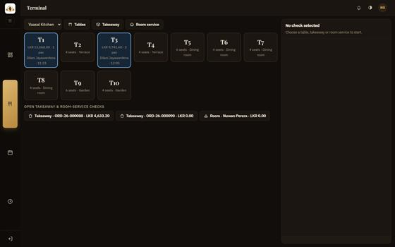 30_pos_floor_plan.png | Tap T6; covers 4 | பணியாளர் மேசை வரைபடத்தில் காலியான T6-ஐத் தேர்வு செய்து, விருந்தினர் எண்ணிக்கை நான்கு. |
| 5:04–5:11 | 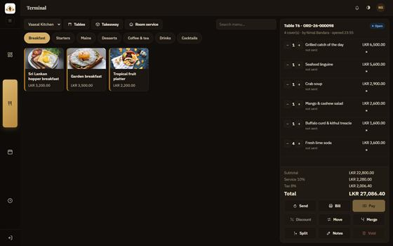 05_pos_table.png | Show the order lines; press Send | உணவுகளைச் சேர்த்து Send. சமையலறைக்கும் bar-க்கும் தனித்தனி ticket செல்லும். |
| 5:11–5:17 | 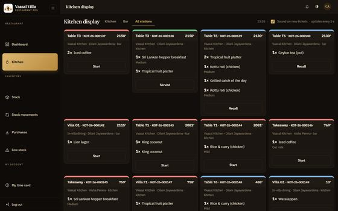 31_kitchen_kot_t6.png | T6 tickets on the KDS | சமையலறை தயாரித்து Ready, பின்னர் Served எனக் குறிக்கிறது. |
| 5:17–5:25 | 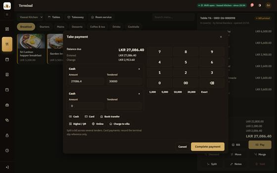 06_pos_payment.png | Type 30000 in Tendered; show Change | பில் 27,086.40. விருந்தினர் முப்பதாயிரம் கொடுக்கிறார் — மீதி 2,913.60 தானாகக் கணக்கிடப்படுகிறது. |
| 5:26–5:32 | 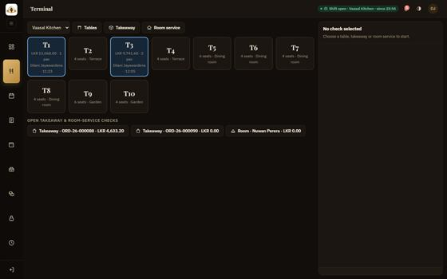 36_table_released.png | T6 free again | Complete payment அழுத்தியதும் பற்றுச்சீட்டு வரும்; T6 மீண்டும் காலியாகும். |
11காசாளர் ஷிப்ட் மற்றும் நாள் முடிவு Cashier shift & day-end5:34 – 5:59
| நேரம் | திரை | செயல் / Action | விவரிப்பு (Narration) |
|---|
| 5:34–5:41 | 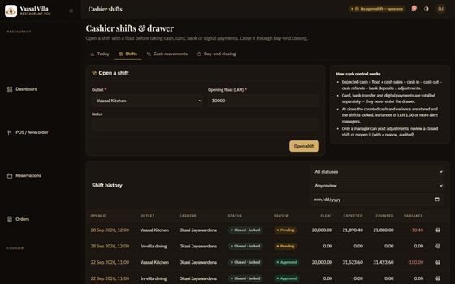 32_open_shift.png | Outlet Vaasal Kitchen; float 10000; Open shift | பணம் வாங்கும் முன் அந்த outlet-இல் ஷிப்ட் திறக்க வேண்டும் — தொடக்கப் பணம் பத்தாயிரம். |
| 5:41–5:50 | 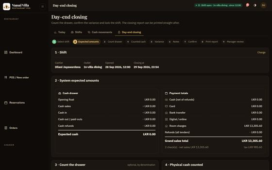 81_day_end_count.png | Denomination grid and Variance box | நாள் முடிவில் drawer-இல் உள்ள பணத்தை எண்ணி Counted cash-இல் உள்ளிடுங்கள். வேறுபாடு தானாகத் தெரியும். |
| 5:50–5:57 | 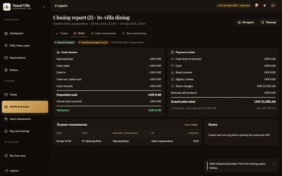 82_shift_closed.png | Shift closed banner | உறுதிப்படுத்தி Close shift. ஷிப்ட் பூட்டப்பட்டு மேலாளர் மீளாய்வுக்குச் செல்லும். |
12சாவி அட்டைகள் (சிமுலேஷன்) Key cards (simulation)5:59 – 6:19
| நேரம் | திரை | செயல் / Action | விவரிப்பு (Narration) |
|---|
| 5:59–6:08 | 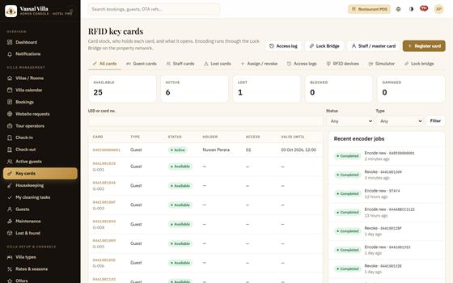 12_key_cards.png | Pointer on Lost and Revoke | Key cards பக்கத்தில் விருந்தினர், பணியாளர் அட்டைகளை நிர்வகிக்கலாம்; தொலைந்தால் உடனே Lost எனக் குறியுங்கள். |
| 6:08–6:18 | 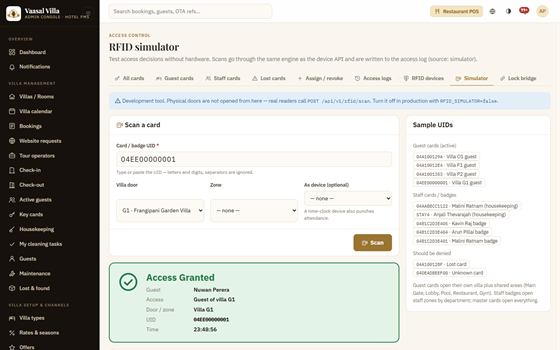 47_rfid_simulator.png | Purple overlay: "SIMULATION ONLY" | சிமுலேட்டரில் Nuwan-இன் அட்டை G1 கதவில் — Access Granted. இது சோதனை மட்டும்; உண்மையான பூட்டு இணைக்கப்படவில்லை. |
13இரவுத் தணிக்கை Night audit6:19 – 6:44
| நேரம் | திரை | செயல் / Action | விவரிப்பு (Narration) |
|---|
| 6:19–6:25 | 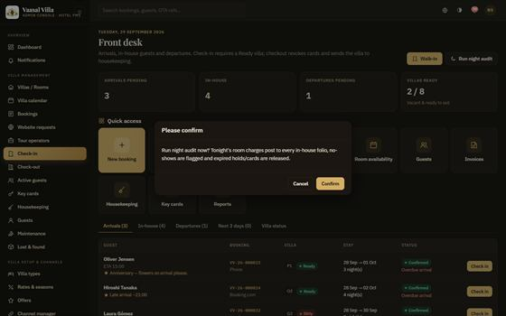 49_night_audit_confirm.png | Confirm dialog | மேலாளர் Front desk-இல் Run night audit அழுத்தி உறுதிப்படுத்துகிறார். |
| 6:25–6:33 | 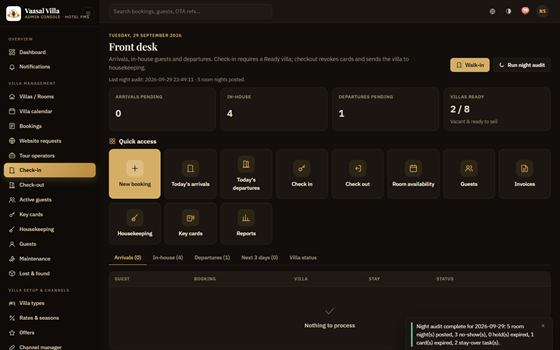 13_night_audit.png | Zoom on the result message | அறை இரவுக் கட்டணங்கள் பதியும், வராதவர்கள் No-show ஆவார்கள், காலாவதியான அட்டைகள் ரத்தாகும். |
| 6:33–6:43 | 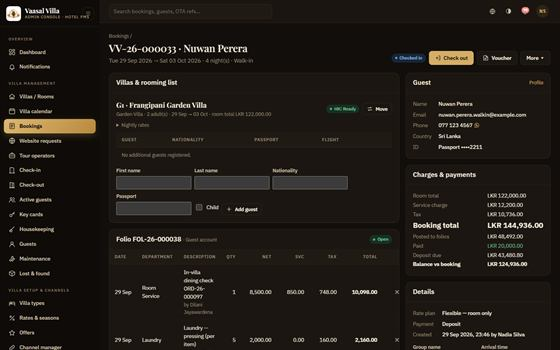 50_folio_after_audit.png | Highlight the new room-night line | Nuwan-இன் folio-வில் 29 செப்டம்பர் இரவுக் கட்டணம் 36,234 சேர்ந்துள்ளது. இரண்டாம் முறை இயக்கினாலும் இரட்டிப்பாகாது. |
14அறிக்கைகள் மற்றும் உணவக மேலாளர் Reports & restaurant back office6:44 – 7:00
| நேரம் | திரை | செயல் / Action | விவரிப்பு (Narration) |
|---|
| 6:44–6:51 | 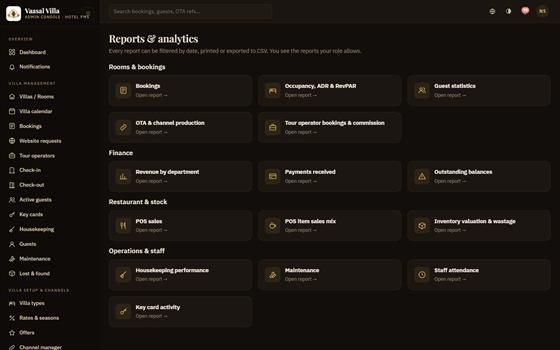 60_reports.png | Scroll the report list | Reports பக்கத்தில் 15 வகை அறிக்கைகள்; தேதி வரம்பு கொடுத்து CSV-ஆக எடுக்கலாம். |
| 6:52–6:59 | 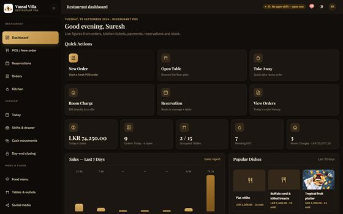 38_pos_dashboard.png | Pan across the POS dashboard | உணவக மேலாளர் POS dashboard-இல் விற்பனை, திறந்த checks, ஷிப்ட் நிலையைப் பார்க்கிறார். |
15பிழைகள் மற்றும் தீர்வுகள் Errors & troubleshooting7:00 – 7:18
| நேரம் | திரை | செயல் / Action | விவரிப்பு (Narration) |
|---|
| 7:00–7:09 | 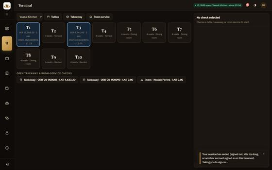 75_session_ended.png | Show the session-ended message | 30 நிமிடம் எதுவும் செய்யாவிட்டால் அமர்வு முடியும். மீண்டும் உள்நுழைந்தால் அதே பக்கத்துக்குத் திரும்புவீர்கள். |
| 7:10–7:17 | 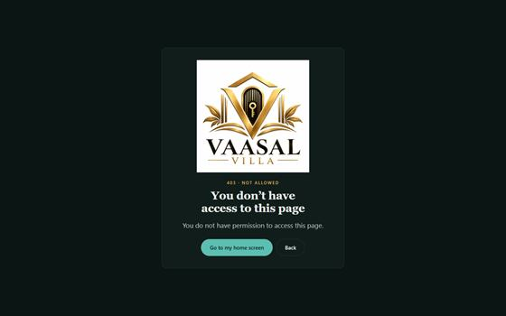 73_forbidden_403.png | Show the 403 page | 403 என்றால் உங்கள் பாத்திரத்துக்கு அனுமதி இல்லை. சரியான கணக்கில் உள்நுழையுங்கள். |
16நிறைவு Closing7:18 – 7:31
| நேரம் | திரை | செயல் / Action | விவரிப்பு (Narration) |
|---|
| 7:18–7:24 | 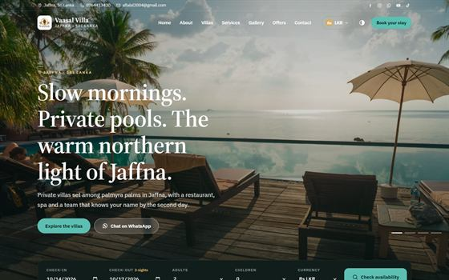 78_website_home.png | Show the manual cover | முழு விவரங்களுக்கு தமிழ்ப் பயன்பாட்டு வழிகாட்டி PDF-ஐப் பாருங்கள். |
| 7:25–7:29 | 78_website_home.png | Contact card + logo | உதவிக்கு: 0764413420, aflalal2004@gmail.com. நன்றி! |
4முழு விவரிப்பு ஸ்கிரிப்ட்Full Tamil narration (read aloud)
குரல் பதிவு செய்பவர் இதை நேரடியாக வாசிக்கலாம். ஒவ்வொரு வாக்கியத்துக்கும் பின் சிறிய இடைவெளி விடுங்கள்; எண்களைத் தெளிவாக உச்சரியுங்கள் (உ-ம்: "இருபத்தேழாயிரத்து எண்பத்தாறு ரூபாய் நாற்பது சதம்").
காட்சி 1 — அறிமுகம் (0:02)
வணக்கம்! Vaasal Villa ஹோட்டல் மற்றும் உணவக மேலாண்மை அமைப்பின் பயிற்சிக்கு வரவேற்கிறோம். இந்த அமைப்பில் இரண்டு பகுதிகள் உள்ளன: வில்லாக்களுக்கான ஹோட்டல் PMS, உணவகத்துக்கான POS. இன்று ஒரு விருந்தினரின் முழுப் பயணத்தையும் — முன்பதிவு முதல் வெளியேறுதல் வரை — பார்ப்போம்.
காட்சி 2 — உள்நுழைவு (0:27)
உங்கள் பயனர் பெயரையும் கடவுச்சொல்லையும் உள்ளிட்டு Sign in அழுத்துங்கள். கீழே உள்ள டெமோ அட்டைகள் சோதனைக் கணினியில் மட்டுமே தெரியும்; உண்மையான கணினியில் மறைந்துவிடும். கடவுச்சொல் தவறானால் பொதுவான செய்தி வரும். ஐந்து தவறுகளுக்குப் பின் கணக்கு 15 நிமிடம் பூட்டப்படும். உங்கள் கடவுச்சொல்லை யாருடனும் பகிர வேண்டாம்; மேசையை விட்டுச் செல்லும்போது Log out செய்யுங்கள்.
காட்சி 3 — டாஷ்போர்டு மற்றும் முன் மேசை (1:00)
டாஷ்போர்டில் இன்றைய வருகைகள், வெளியேற்றங்கள், நிரம்பல், வருமானம் ஒரே பார்வையில் தெரியும். கீழே வில்லா நிலைப் பலகை — ஒவ்வொரு வில்லாவும் காலியா, நிரம்பியதா, சுத்தம் தேவையா என்று காட்டும். வரவேற்பாளரின் முதன்மைப் பக்கம் Front desk. இங்கே Walk-in மற்றும் Run night audit பொத்தான்கள் உள்ளன.
காட்சி 4 — Walk-in முன்பதிவு — உதாரணம் A (1:27)
Nuwan Perera முன்பதிவின்றி வருகிறார்: 29 செப்டம்பர் முதல் 3 அக்டோபர் வரை, இருவர். அனைத்து இரவுகளிலும் காலியான வில்லாக்கள் மட்டுமே பட்டியலில் வரும். G1-ஐத் தேர்வு செய்கிறோம். விருந்தினரின் பெயர், நாடு, மின்னஞ்சல், தொலைபேசி ஆகியவற்றை நிரப்புங்கள். மேலாளர் ஒப்புக்கொண்ட இரவு விலை 30,500 — காரணத்துடன் override செய்யப்படுகிறது. முற்பணம் இருபதாயிரம் ரூபாய், அட்டை மூலம். பின்னர் Create booking. முன்பதிவு மொத்தம் 144,936 ரூபாய்: அறை 122,000, சேவைக் கட்டணம் 10%, வரி 8%.
காட்சி 5 — வருகைப் பதிவு மற்றும் சாவி அட்டை (2:11)
Check-in பக்கத்தில் அடையாள ஆவண வகையும் எண்ணும் கட்டாயம். ஆவணப் படத்தையும் இணைக்கலாம். வில்லா Ready நிலையில் இருக்க வேண்டும். Free cards பட்டியலில் ஒரு அட்டையைத் தேர்வு செய்யுங்கள். Complete check-in அழுத்தியதும் வில்லா Occupied ஆகும், அட்டை Active ஆகும். கவனிக்க: இந்தக் கணினியில் கதவுப் பூட்டுகள் சிமுலேட்டர் மூலம் மட்டுமே இயங்குகின்றன.
காட்சி 6 — அறை சேவை — உதாரணம் C (2:42)
விருந்தினர் வில்லாவிலிருந்து உணவு கேட்கிறார். POS-இல் Room service அழுத்தி G1 · Nuwan Perera தேர்வு செய்யுங்கள். Seafood linguine, Crab soup — மொத்தம் 8,500 ரூபாய். Send அழுத்தினால் சமையலறைக்குச் செல்லும். சமையலறைத் திரையில் புதிய ticket வருகிறது. Start, Ready, Served என வரிசையாக அழுத்துங்கள். பின்னர் Pay, Charge to villa. சேவைக் கட்டணம், வரியுடன் 10,098 ரூபாய் G1 கணக்கில் சேரும்.
காட்சி 7 — Folio மற்றும் கூடுதல் கட்டணம் (3:18)
சலவைக் கட்டணம் சேர்க்க Folio-வில் Post charge. Pressing, ஐந்து உடைகள் — இரண்டாயிரம் ரூபாய். வரி 160 சேர்த்து 2,160. Folio-வில் அறை சேவை, சலவை, முற்பணம் எல்லாம் தெரியும். பதிவான கட்டணத்தை அழிக்க முடியாது; அனுமதியுள்ளவர் மட்டும் எதிர்ப் பதிவு செய்யலாம்.
காட்சி 8 — வெளியேறுதல் — உதாரணம் D (3:41)
Oliver Jensen வெளியேறுகிறார். ஆனால் ஒரு உணவகக் கணக்கு இன்னும் திறந்துள்ளது — Complete checkout முடக்கப்பட்டுள்ளது. Request restaurant settlement அழுத்துங்கள். காசாளருக்கு அறிவிப்பு செல்லும். காசாளர் அந்த check-ஐ Charge to villa மூலம் வில்லாக் கணக்கில் சேர்க்கிறார். இப்போது நிலுவையை அட்டையால் செலுத்தி Complete checkout அழுத்துங்கள். இறுதி விலைப்பட்டியல்: 84,371.76 ரூபாய், முழுமையாகச் செலுத்தப்பட்டது. வில்லா Dirty ஆகி சுத்தப் பணி உருவாகிறது.
காட்சி 9 — வீட்டுப் பராமரிப்பு — உதாரணம் E (4:23)
அறைப் பணியாளர் My cleaning tasks-இல் G1-ஐ Accept செய்து Start அழுத்துகிறார். சரிபார்ப்புப் பட்டியலில் ஒவ்வொரு வேலையையும் டிக் செய்யுங்கள். எல்லாம் முடியாமல் சமர்ப்பிக்க முடியாது. மேற்பார்வையாளரின் board-இல் G1 ஆய்வுக்காகக் காத்திருக்கிறது. சரியாக இருந்தால் Approve; குறை இருந்தால் காரணத்துடன் Reject. G1 இப்போது Ready — அடுத்த விருந்தினருக்குத் தயார்.
காட்சி 10 — உணவகம்: மேசை T6 — உதாரணம் B (4:56)
பணியாளர் மேசை வரைபடத்தில் காலியான T6-ஐத் தேர்வு செய்து, விருந்தினர் எண்ணிக்கை நான்கு. உணவுகளைச் சேர்த்து Send. சமையலறைக்கும் bar-க்கும் தனித்தனி ticket செல்லும். சமையலறை தயாரித்து Ready, பின்னர் Served எனக் குறிக்கிறது. பில் 27,086.40. விருந்தினர் முப்பதாயிரம் கொடுக்கிறார் — மீதி 2,913.60 தானாகக் கணக்கிடப்படுகிறது. Complete payment அழுத்தியதும் பற்றுச்சீட்டு வரும்; T6 மீண்டும் காலியாகும்.
காட்சி 11 — காசாளர் ஷிப்ட் மற்றும் நாள் முடிவு (5:34)
பணம் வாங்கும் முன் அந்த outlet-இல் ஷிப்ட் திறக்க வேண்டும் — தொடக்கப் பணம் பத்தாயிரம். நாள் முடிவில் drawer-இல் உள்ள பணத்தை எண்ணி Counted cash-இல் உள்ளிடுங்கள். வேறுபாடு தானாகத் தெரியும். உறுதிப்படுத்தி Close shift. ஷிப்ட் பூட்டப்பட்டு மேலாளர் மீளாய்வுக்குச் செல்லும்.
காட்சி 12 — சாவி அட்டைகள் (சிமுலேஷன்) (5:59)
Key cards பக்கத்தில் விருந்தினர், பணியாளர் அட்டைகளை நிர்வகிக்கலாம்; தொலைந்தால் உடனே Lost எனக் குறியுங்கள். சிமுலேட்டரில் Nuwan-இன் அட்டை G1 கதவில் — Access Granted. இது சோதனை மட்டும்; உண்மையான பூட்டு இணைக்கப்படவில்லை.
காட்சி 13 — இரவுத் தணிக்கை (6:19)
மேலாளர் Front desk-இல் Run night audit அழுத்தி உறுதிப்படுத்துகிறார். அறை இரவுக் கட்டணங்கள் பதியும், வராதவர்கள் No-show ஆவார்கள், காலாவதியான அட்டைகள் ரத்தாகும். Nuwan-இன் folio-வில் 29 செப்டம்பர் இரவுக் கட்டணம் 36,234 சேர்ந்துள்ளது. இரண்டாம் முறை இயக்கினாலும் இரட்டிப்பாகாது.
காட்சி 14 — அறிக்கைகள் மற்றும் உணவக மேலாளர் (6:44)
Reports பக்கத்தில் 15 வகை அறிக்கைகள்; தேதி வரம்பு கொடுத்து CSV-ஆக எடுக்கலாம். உணவக மேலாளர் POS dashboard-இல் விற்பனை, திறந்த checks, ஷிப்ட் நிலையைப் பார்க்கிறார்.
காட்சி 15 — பிழைகள் மற்றும் தீர்வுகள் (7:00)
30 நிமிடம் எதுவும் செய்யாவிட்டால் அமர்வு முடியும். மீண்டும் உள்நுழைந்தால் அதே பக்கத்துக்குத் திரும்புவீர்கள். 403 என்றால் உங்கள் பாத்திரத்துக்கு அனுமதி இல்லை. சரியான கணக்கில் உள்நுழையுங்கள்.
காட்சி 16 — நிறைவு (7:18)
முழு விவரங்களுக்கு தமிழ்ப் பயன்பாட்டு வழிகாட்டி PDF-ஐப் பாருங்கள். உதவிக்கு: 0764413420, aflalal2004@gmail.com. நன்றி!
5பதிவு செய்யும் முறைHow to record — two options
5.1முறை A — நேரடித் திரைப் பதிவு (பரிந்துரை)
- OBS Studio நிறுவுங்கள் (இலவசம்). Settings → Video: Base/Output 1920×1080, 30 fps. Output: MP4, encoder x264, CRF 20. Audio: 48 kHz, நல்ல USB microphone.
- உலாவியை முழுத் திரையில் (F11) 1920×1080-இல் திறந்து, zoom 125% வைத்தால் எழுத்துக்கள் தெளிவாகத் தெரியும்.
- டெமோ தரவுத்தளத்தைப் பதிவுக்கு முன் மீட்டெடுங்கள் (QA backup), அப்போதுதான் G1, T6 போன்றவை காட்சிப் பலகையில் உள்ளபடி இருக்கும்.
- ஒவ்வொரு காட்சியையும் தனித்தனியாகப் பதிவு செய்யுங்கள் (காட்சி 1 … 16). மவுஸை மெதுவாக நகர்த்துங்கள்; கிளிக் செய்யும் முன் 1 விநாடி நிறுத்துங்கள்.
- கடவுச்சொல்லைத் தட்டச்சு செய்யும் காட்சியைப் பதிவு செய்ய வேண்டாம் — உள்நுழைந்த பின் பதிவைத் தொடங்குங்கள்.
- விவரிப்பைத் தனியாக (Audacity-இல்) பதிவு செய்து, noise reduction மற்றும் normalize (−1 dB) செய்யுங்கள்.
- Shotcut / DaVinci Resolve / Clipchamp-இல் காட்சிகளையும் குரலையும் இணைத்து,
VAASAL_VILLA_TRAINING.srt-ஐ இறக்குமதி செய்து நேரத்தைச் சரிபாருங்கள்.
5.2முறை B — படக்காட்சி (slideshow) + விவரிப்பு
திரைப் பதிவு செய்ய முடியாவிட்டால், தயாராக உள்ள 43 frames-ஐ FFmpeg மூலம் SRT நேரத்துக்கேற்ப இணைக்கலாம். விவரிப்பை ஒரே கோப்பாக (narration_ta.m4a) SRT நேரத்துக்கு ஏற்பப் பதிவு செய்யுங்கள் (SRT-ஐத் திரையில் ஓடவிட்டு வாசிக்கலாம்).
6FFmpeg கட்டளைகள்Build the MP4 (run in docs/qa-training)
FFmpeg-ஐ https://ffmpeg.org-இலிருந்து பதிவிறக்கி PATH-இல் சேர்க்கவும். பின்னர் docs/qa-training கோப்புறையில்:
1. படக்காட்சி வீடியோ (ஒலி இல்லாமல்)
cd video_frames
ffmpeg -f concat -safe 0 -i slides.txt -vf "fps=30,format=yuv420p" -c:v libx264 -crf 20 -preset slow ../vv_slides.mp4
cd ..
2. தமிழ் விவரிப்பைச் சேர்த்தல்
ffmpeg -i vv_slides.mp4 -i narration_ta.m4a -map 0:v -map 1:a -c:v copy -c:a aac -b:a 160k -shortest vv_voice.mp4
3a. Subtitles-ஐ வீடியோவில் பதித்தல் (burn-in)
ffmpeg -i vv_voice.mp4 -vf "subtitles=VAASAL_VILLA_TRAINING.srt:charenc=UTF-8:force_style='FontName=Nirmala UI,FontSize=22,PrimaryColour=&H00FFFFFF,BackColour=&H80000000,BorderStyle=4,Outline=0,MarginV=36'" -c:a copy VAASAL_VILLA_TRAINING.mp4
3b. அல்லது — தேர்வு செய்யக்கூடிய subtitle track (soft subs)
ffmpeg -i vv_voice.mp4 -i VAASAL_VILLA_TRAINING.srt -map 0 -map 1 -c copy -c:s mov_text -metadata:s:s:0 language=tam VAASAL_VILLA_TRAINING.mp4
4. சரிபார்த்தல்
ffprobe -v error -show_entries format=duration -of csv=p=0 VAASAL_VILLA_TRAINING.mp4
குறிப்புகள்
- Burn-in-இல் தமிழ் எழுத்து உடைந்தால், FFmpeg libass-க்கு font கிடைக்கிறதா பாருங்கள்:
:fontsdir=C\:/Windows/Fonts சேர்க்கவும்.
slides.txt-இல் உள்ள நேரங்கள் SRT-உடன் பொருந்துகின்றன; விவரிப்பு நீண்டால் அந்த வரியின் duration-ஐ அதிகரித்து, SRT-ஐ Subtitle Edit மூலம் நகர்த்துங்கள்.- இறுதி வீடியோவை YouTube-இல் "Unlisted" ஆகப் பதிவேற்றலாம்; அப்போது .srt-ஐத் தனியாகவும் சேர்க்கலாம்.
7வெளியிடும் முன் சரிபார்ப்புPre-publish checklist
- ☐ எந்தக் காட்சியிலும் கடவுச்சொல், API key,
.env உள்ளடக்கம் இல்லை.
- ☐ சாவி அட்டைக் காட்சியில் "SIMULATION" என்ற குறிப்பு தெரிகிறது; உண்மையான பூட்டு இணைப்பு என்று கூறப்படவில்லை.
- ☐ தொகைகள் வழிகாட்டியுடன் பொருந்துகின்றன: 144,936.00 · 10,098.00 · 2,160.00 · 84,371.76 · 27,086.40 / 2,913.60 · 36,234.00.
- ☐ Subtitles வாசிக்கக்கூடியவை (ஒரு வரிக்கு 46 எழுத்துகளுக்குள், இரண்டு வரிகளுக்கு மேல் இல்லை).
- ☐ ஒலி அளவு சீரானது; பின்னணி இசை விவரிப்பை மறைக்கவில்லை.
- ☐ இறுதியில் தொடர்பு விவரங்கள்: 0764413420 · aflalal2004@gmail.com.